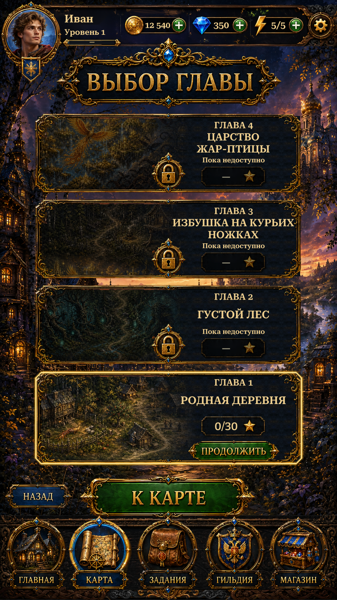

World Map — Panel Border R4World Map · Panel Border R4
Actual Unity captures. The active chapter now has a continuous outline around its panel boundary.
The panel perimeter is highlighted, rather than the extracted scrollwork. The old ornament-shaped glow is disabled; the panel interior remains unchanged.
25 Unity checks passed. The artwork, text and progress behavior remain unchanged.
